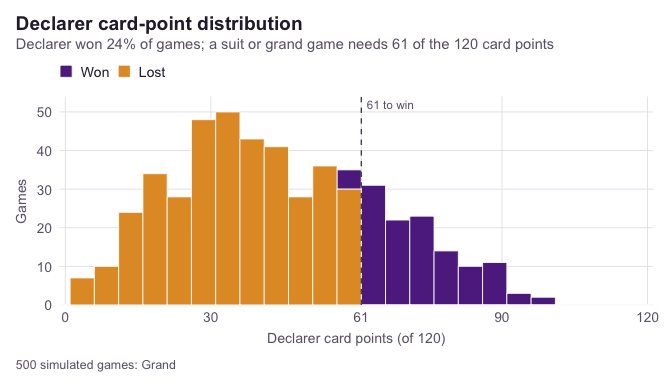

skatR is a toolkit for analysing and simulating the German card game Skat. It provides trick play and scoring for suit, grand, and null games, game-value computation, players spanning rule-based heuristics through determinized Monte Carlo to an exact double-dummy solver, Monte Carlo simulation over many deals, and tidy analysis and visualisation of outcomes.
The caller supplies a resolved contract and the final ten-card hands plus skat. Bidding, skat pickup/discard decisions, overbidding, and a tournament manager are outside the current engine. sk_ruleset() stores variant metadata; play and scoring do not consume Bock, Ramsch, or Kontra settings.
Hand games include the skat in the declarer’s card points and matador count. Automatic values include achieved Schneider/Schwarz; announced levels and ouvert are checked explicitly. Corrected scores can differ from earlier releases. game_value means the complete scoring value, not the player’s bid.
Quick start
Deal a hand and play it out. Every seat is a strategy object, so the same call covers random, heuristic, and search-based play.
library(skatR)
deal <- sk_deal(seed = 42)
game <- sk_play_game(deal$hands, deal$skat, declarer = 1, game_type = "grand")
game$result
#> <sk_result>: declarer lost
#> • Game value: 120
#> • Score: -240
#> • Schneider: yes
#> • Schwarz: noRepeat it a few hundred times to see how a configuration performs.
sim <- sk_simulate(n = 500, game_type = "grand", seed = 1, verbose = FALSE)
mean(sim$won)
#> [1] 0.242
sk_plot_points(sim)
Or solve an endgame exactly. The double-dummy solver runs an alpha-beta search in C++ and returns the card points the declarer can guarantee against perfect defence.
hands <- list(c("CJ", "SA"), c("HA", "H9"), c("DA", "D9"))
sk_solve_dd(hands, game_type = "grand", declarer = 1)
#> [1] 35What is in the box
| Area | Functions |
|---|---|
| Cards and ordering |
sk_full_deck(), sk_card(), sk_points(), sk_card_order(), sk_strength(), sk_is_trump(), sk_effective_suit()
|
| Bidding |
sk_base_value(), sk_matadors(), sk_game_value()
|
| Play and scoring |
sk_legal_moves(), sk_trick_winner(), sk_count_points(), sk_score_game()
|
| Players |
sk_player(), sk_choose(), sk_mcts_move()
|
| Solver | sk_solve_dd() |
| Simulation |
sk_deal(), sk_play_game(), sk_simulate()
|
| Plots |
sk_plot_points(), sk_plot_winrate()
|
| Rules and demo |
sk_ruleset(), sk_run_app()
|
vignette("skatR") walks through all of it in order.
Local maintenance candidate
See MAINTENANCE.md for the 30 October 2026 repairs, exact local installation path, verification results and remaining release limits.